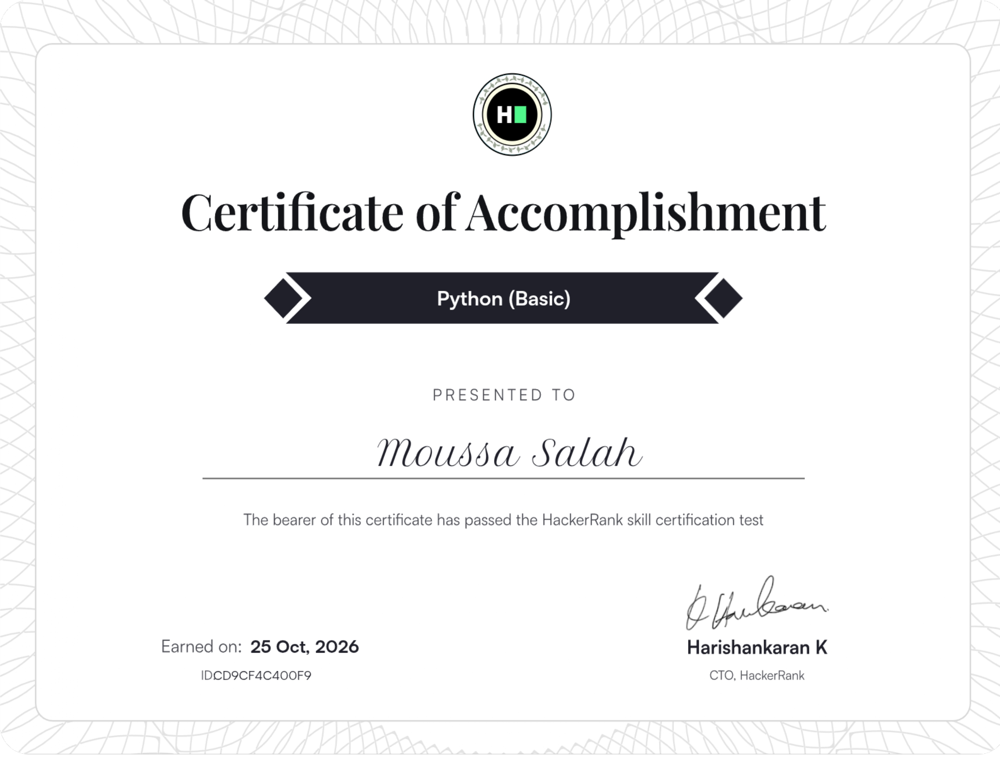
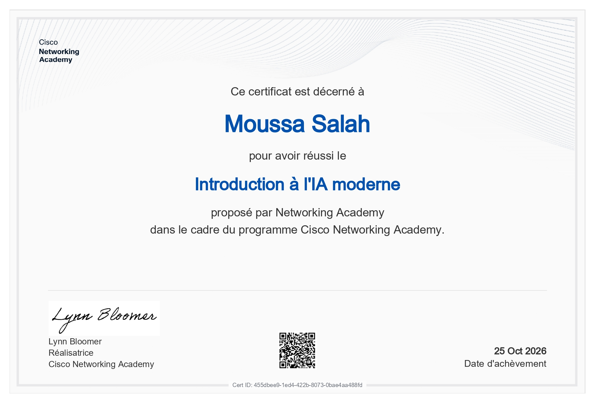

Python (Basic)
ID: cd9cf4c400f9 | HackerRank
Validation des concepts fondamentaux en Python.
> Acquis | Ce certificat atteste d'une maîtrise technique de la programmation orientée objet, de l'algorithmique et de la manipulation des structures de données.

Introduction to Cybersecurity
ID: a0879baf-21c4-498e | Cisco
Validation des principes de base de la sécurité des réseaux.
> Acquis | Ce certificat atteste d'une maîtrise technique concernant l'analyse des cybermenaces, les protocoles de protection des données et la sécurisation des infrastructures.
Introduction to Modern AI
ID: 455dbee9-1ed4-422b | Cisco
Exploration technique des modèles d'intelligence artificielle.
> Acquis | Ce certificat atteste d'une maîtrise technique des modèles d'intelligence artificielle, notamment l'IA générative, l'ingénierie de prompt, la vision par ordinateur et les mécanismes de traduction automatique.
